Controllable Diffusion-Based Human Gait Generation and Ground Reaction Force Estimation
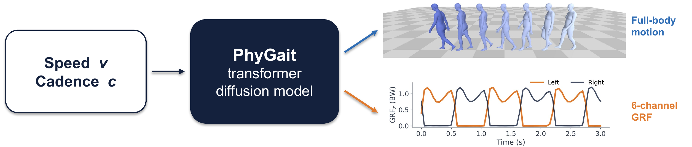
Two numbers in, full-body walking and ground reaction forces out. Each walker and its force curves are generated together by PhyGait.
Typical samples, not hand-picked best ones: each video shows the median-cadence-error sample out of 20.
Generating physically plausible human gait with explicit control over biomechanical parameters is motivated by applications such as clinical gait analysis, rehabilitation, wearable robot control, and biomechanical simulation. Existing human motion generation models are typically conditioned on text descriptions or action labels, which provide limited control over quantitative gait variables such as walking speed and cadence. They also commonly generate only kinematics, without ground reaction forces (GRFs) needed for biomechanical analysis.
In this work, we propose PhyGait, a diffusion-based framework that generates full-body human gait motion and six-channel GRFs conditioned on target speed and cadence. The framework uses a transformer-based denoising network with continuous gait conditioning, adaptive layer normalization, joint motion-GRF generation, and gait-specific physical consistency losses. Trained on 8,953 laboratory motion-capture gait clips collected from two treadmill datasets, PhyGait was evaluated across 13,800 generated samples spanning 115 speed–cadence conditions over speeds of 0.75–1.7 m/s and cadences of 1.5–2.1 steps/s. It accurately followed the target gait conditions, with speed and cadence mean absolute errors of 0.005 m/s and 0.049 steps/s, respectively, while generating realistic motions, stable foot-ground contacts, and biomechanically plausible GRF profiles. These results demonstrate the potential of diffusion models for generating controllable and biomechanically plausible synthetic gait data.
Every clip below was generated by PhyGait from the two numbers you choose, with its own ground reaction forces. Each one is the median sample out of 20 for that input, not the best one.
Each speed offers cadences the model reproduces closely. The options shift upward at higher speeds, because fast walking with slow, long steps falls outside the range people (and our training data) actually walk in.
0.8 to 1.7 m/s in 0.1 m/s steps, each at a typical cadence for its speed. All ten start together; the faster walkers pull ahead.
All walkers at 1.0 m/s, with cadence from 1.5 to 2.1 steps/s. They cover the same distance, but higher cadences take quicker, shorter steps, a distinction a text prompt like “walk faster” cannot express.
Five samples for one request, 1.2 m/s at 1.8 steps/s. Each hits the requested speed and cadence, yet arm swing, step width and posture differ from walker to walker, the natural variety a diffusion model draws from rather than one averaged gait.
Exoskeleton control, rehabilitation, clinical analysis and simulation all need large, diverse walking data with both motion and ground reaction forces (GRFs). Measuring it takes motion capture, force plates and lab time for every subject, and today's text-driven motion generators can't produce it.
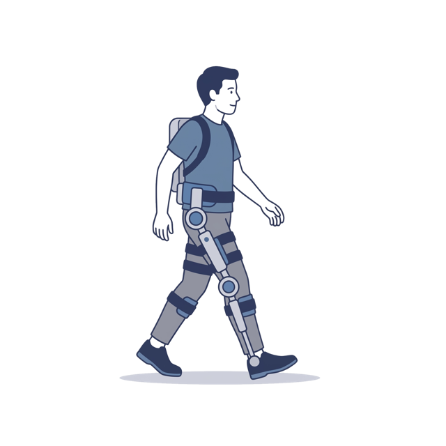
Train and test exoskeleton and prosthesis controllers
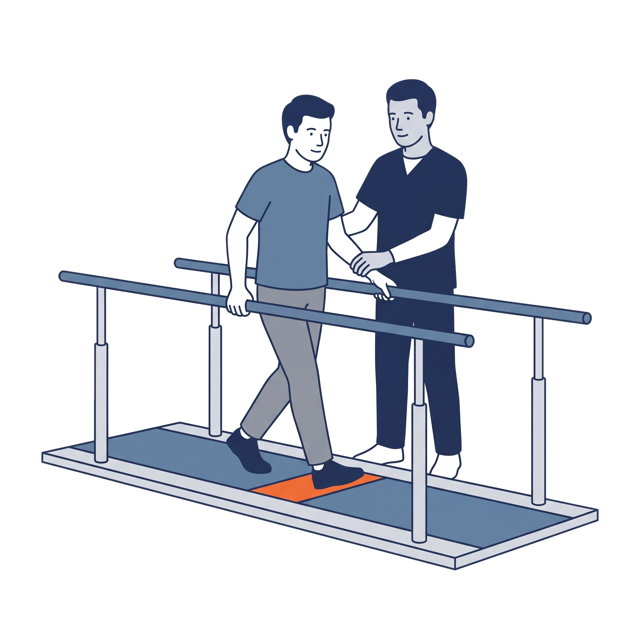
Plan and monitor gait training
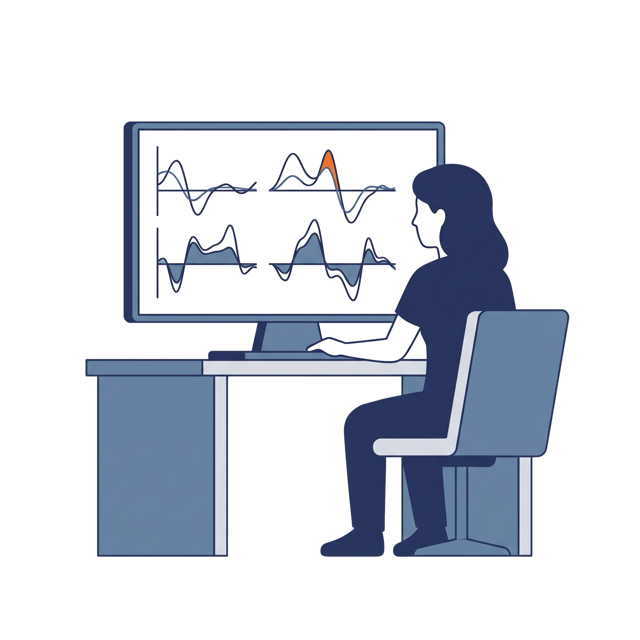
Compare patients with healthy references
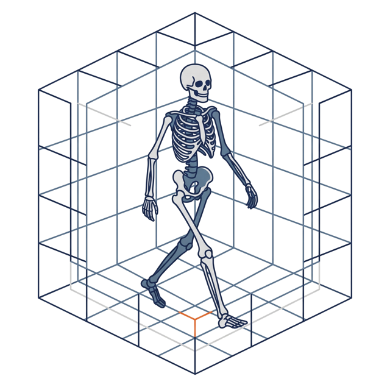
Drive musculoskeletal and physics models
existing text-to-motion models
what biomechanics needs
Each 5-second clip is a 100 × 269 sequence: 263 HumanML3D motion features plus 6 GRF channels (3-D force under each foot). A compact transformer (4 layers, 4.7 M parameters) denoises motion and forces together, and speed and cadence steer every layer through adaptive LayerNorm.
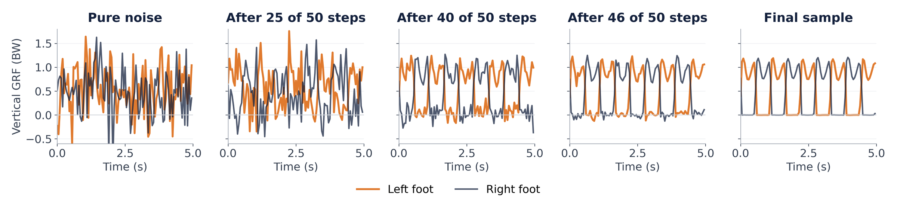
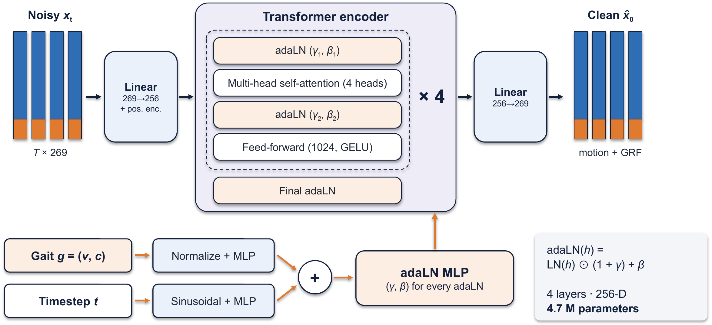
No sliding while a foot is on the ground
Generated speed and step frequency match the targets
Zero force when the foot is in the air
Vertical force matches the center-of-mass acceleration of the generated body
8,953 five-second clips from two lab treadmill collections with instrumented-treadmill GRFs, converted to overground walking (measured belt speed integrated into the root) and to HumanML3D features at 20 Hz. Speed and cadence labels are extracted from the motion itself.
Collection 1: 8 subjects · 0.8 / 1.2 / 1.6 m/s
Collection 2: 21 subjects · 0.75 / 1.00 / 1.25 m/s
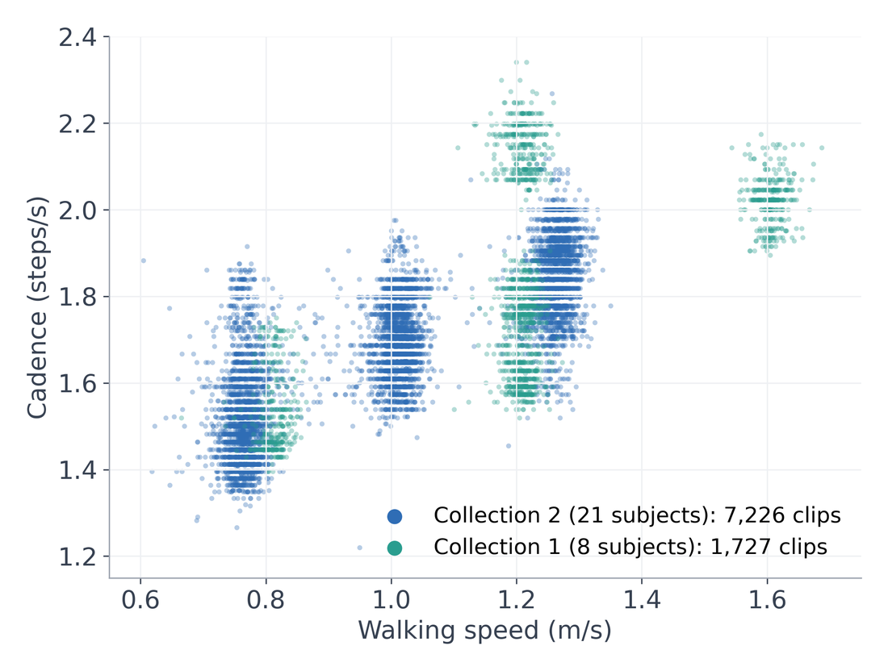
Speeds 0.75–1.7 m/s and cadences 1.5–2.1 steps/s, 120 samples per condition.
Speed error 0.005 m/s (r > 0.999), including speeds between the training speeds; cadence error 0.049 steps/s (r = 0.92).
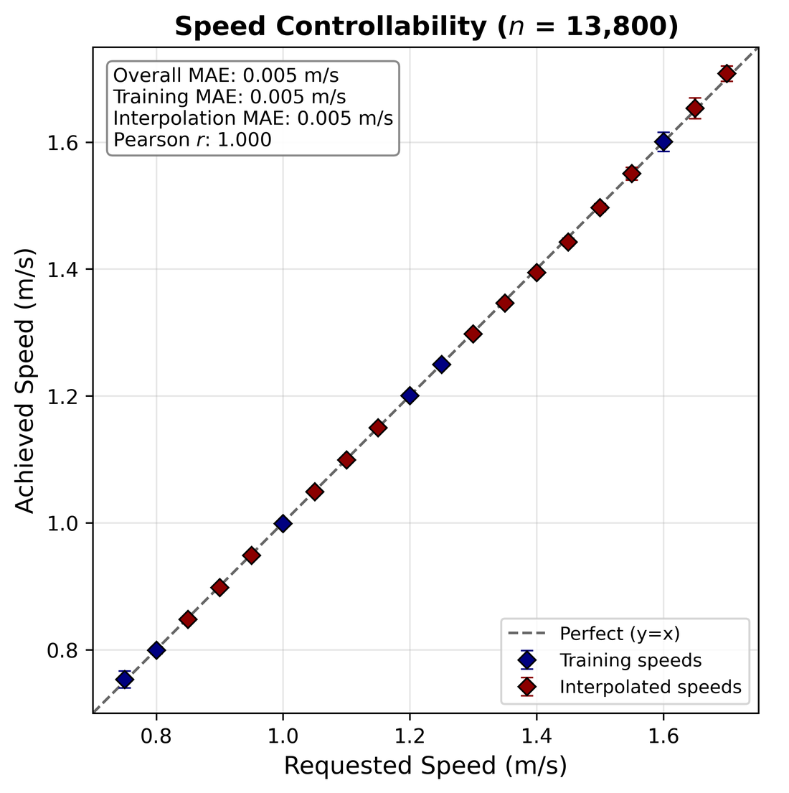
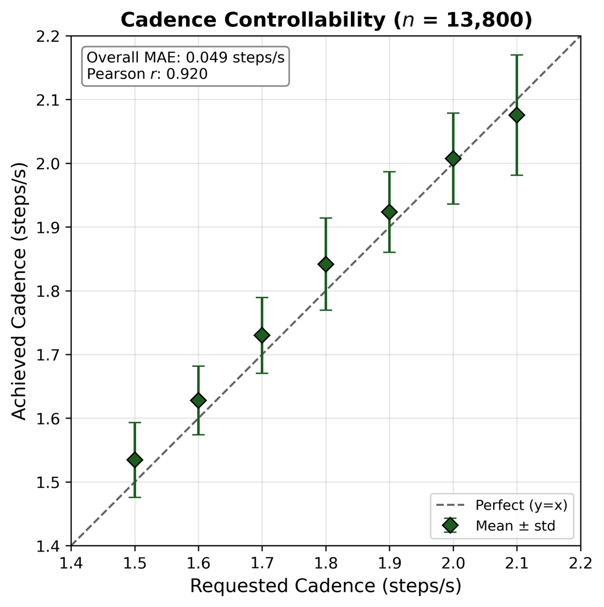
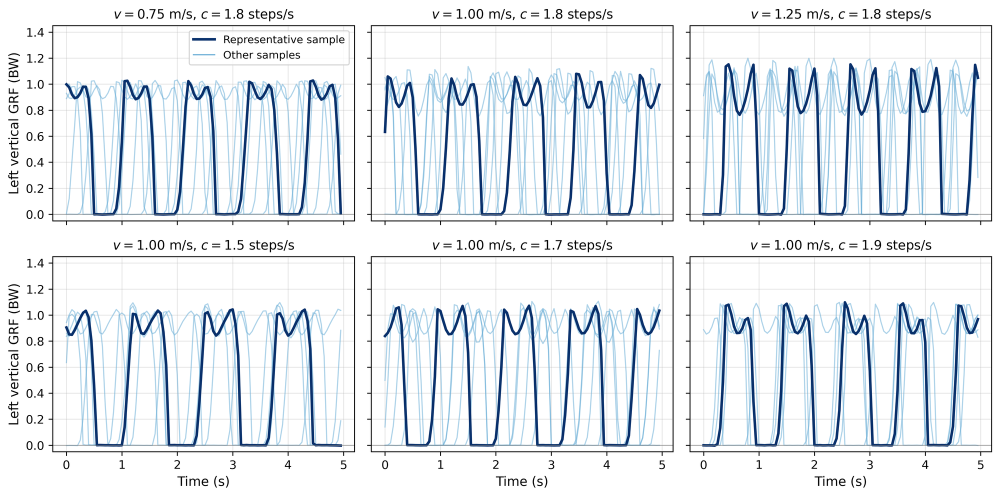
From the generated joints we compute the center of mass and the force its motion implies, and compare it with the generated GRF. The same check on real force-plate data sets the upper limit.
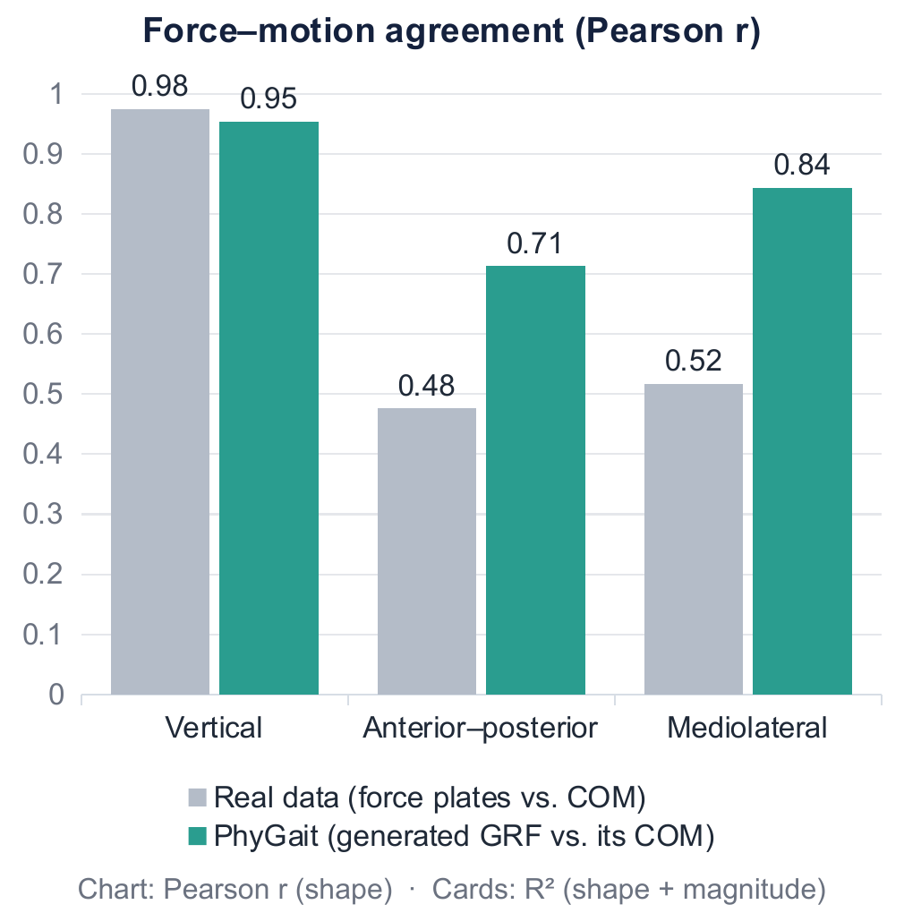
0.62 cm mean stance-foot sliding, lower than the processed motion capture itself (0.68 cm).
1.04 generated-to-real diversity ratio: samples spread like real walking data, with varied gaits for the same input.
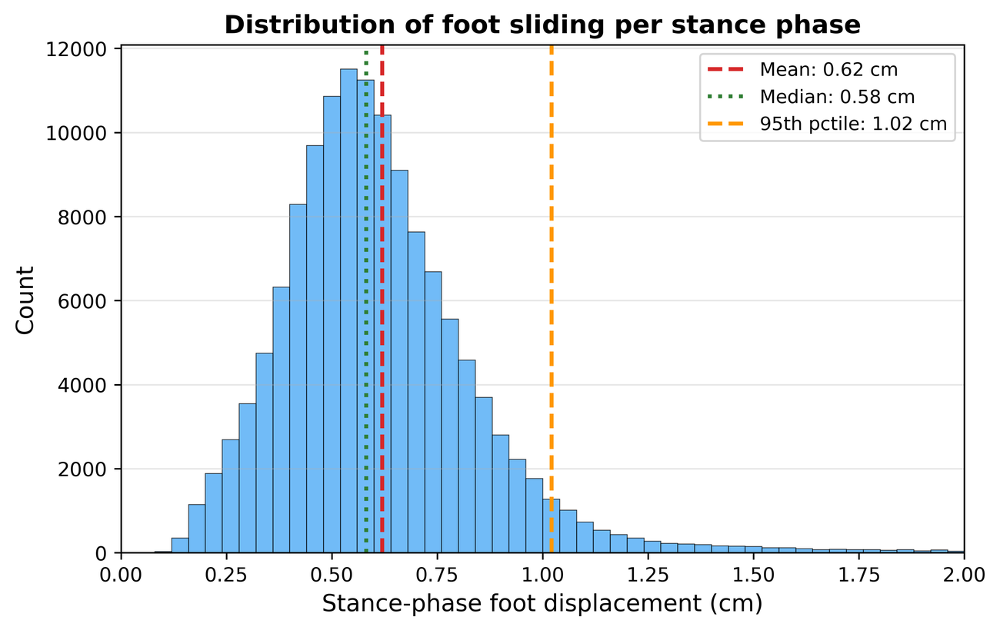
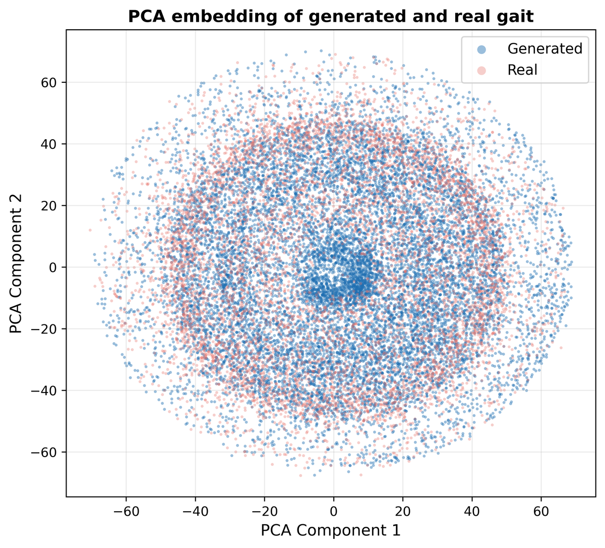
@inproceedings{yousefi2026phygait,
title = {Controllable Diffusion-Based Human Gait Generation
and Ground Reaction Force Estimation},
author = {Yousefi, Mohammad and Lee, Gunhee and Kong, Kyoungchul},
booktitle = {Proceedings of the International Conference on
Control, Automation and Systems (ICCAS)},
year = {2026}
}